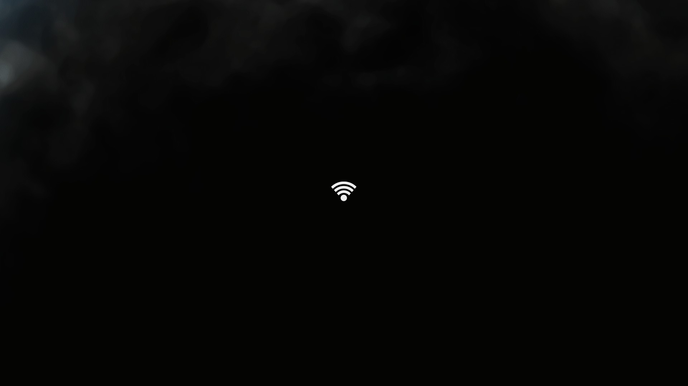

About
B.S. Computer Networking and Cyber Security:
I have a strong interest wireless communication of all forms (WiFi, Bluetooth, mobile, etc.) but I would like to expand to microwave and satellite technologies. My interest security probably started when I was watching an episode of Leverage and the character Harrison pulled out his phone and began 'hacking' a key pad. From that moment I knew I want to go in to the computer security field but didn't know where to start. My senior year of high school I wondered how easy it would be to hack my home WiFi, I soon made it my senior project. Now at the time I was wasn't really exposed to computer systems. At the most I knew that windows were business and my family had a Mac. I managed to 'hack' my WiFi password with a little Acer netbook in under 24 hr, which thinking about it now I don't know if that's good or really sad. (I think its sad, netbook only had a gig of ram :/ ) I found Champlain College looking for computer security degrees. I think some where while going to school I lost my interest. The school had to bring me up to date. It was 2013 and I had never touch a Linux machine, I don't count mac as a UNIX machine.
I began to cost in college, I wasn't really sure what I was into. I was just learning the course. Of course I thought they where interesting but they did have my focus. It felt like I was being taught everything all at once, which is good. I learned networks, computer OS, little bit of the forensic process and some tools. However, learning every thing can have its draw backs.
I have a general wonder about how things works, which can be good, but also bad as its easy to run down the rabbit hole when learning about new and exciting topics. It can be terrible when I want to full understand something. For example, my last semester I was take a network programming course. Off the back, I did terrible, but not because I didn't understand the material, I was learn splunk, python, powershell, ruby, and bash. Now, thats not an excuse and honestly, I had been exposed to them long be for this course, but there was something about learn 4 languages for me that was hard. I wanted to master them and I have a hard time of letting things go. I'm finished with College now but will official get my degree (5/17) and am currently working towards getting my CWNA whcih I hope to get about the same time.
I have re-sparked my interest in Wifi, planning on working with programs, such as Aircrack-NG, OpenWRT, and Kismet.
(2/13/17) got my Certifed Wireless Analyst (CWA) from teracomm, which I honestly think was a little waste of money but the exposure to all then types and form of wireless communication was nice as well as the vocab.
Contact
rfship (at) gmail (dot) com
802.11 Standards

Intro:
802.11 is a set of specifications for implementing local wireless networks or WLAN. The specifciations include the Medium Access Control and Physical Layer. These radio devices communicate at 2.4, 5, and new ones up to the 45/60GHz frequencies. Some you you will see use the 2.4GHz ISM band or the 5 GHz. This is largely do to the 2.4 band becoming over populated creating a lot of noise. The 5 GHz which was less used allowed for a great practice speed. However with higher carrier frequency the signal does not travel as far as the 2.4 carrier frequency.
I will add more detail to each standard however to avoid having a blank page I added overviews of each standard.
Legacy:
With a speed of 1 or 2 Mbits/s it is easy to see why bluetooth was once considered an alternative to wifi. Released in 1997, 802.11 has forward error correction code with three alternative physical layer technologies: Infradred-1Mb/s, frequency-hopping-1 or 2Mb/s, and direct-sequence- 1 or 2Mb/s.
802.11a:
802.11a operates at 5.8 GHz and allows transmission and reception speed of 1.5 to 54 Mb/s. Using the same data link layer protocol and frame format of the original standard, it implements OFDM waveform for its interface. Because of the high carrier frequency, 802.11a has smaller wavelengths which results in not being able to travel through walls or other objects.
802.11b:
Max speed of 11Mb/s, B is the direct extension of the modulation technique which was defined by the original 802.11 standard.
802.11g:
Operating in the 2.4 band with the use of the OFDM transmission scheme as the A standard. 802.11g has a max data rate of about 54Mb/s but in practices was low 20Mb/s. Designed to be backwards compatible with the b standard allow end users to not have to upgrade their network card.
802.11n:
The N standard build on the previous 802.11 standards by adding MIMO, multiple-input multiple-output antennnas. N operates at both the 2.4 and 5 GHz bands. With speeds from 54Mb/s to 600Mb/s
802.11ac:
Building off N, the ac standard provided wider channels in the 5 GHz band, had higher-order modulation(256-QAM) and the addition of Mu-MIMO (Multi-user MIMO). Providing data rates of 400+MB/s
802.11s
S, defines the routing protocol that is used for wireless mesh networks. Support by default is for Hybrid Wireless Mesh Protocols and offers support for other mesh and ad-hoc network protocols: OLSR or BATMAN.
New and Upcoming:
AD, AF, AH, AY
Networking Protocols

Bluetooth
Operates at 2.4GHz-2.485GHz on the ISM band and can hold a connection within ranges from 60m max for 4.0 and up 240m max for version 5.0. Bluetoth uses spread spectum and works by having a master and client. To discover a device, one will listen to the inquirey scan channel. To connect, a device sends a data on the paging channel.
Version 4.0 + LE
Bluetooth Low Engergy aims to allow application to run off coin cells. The design allowed for two types of implementation. Dual mode which uses the low engery protocol stack and single mode which combines Bluetooth Smart function and classic controller. Changes to 4.0v included the ability to support BLE, Generic Atribute Profile(GATT), and Security Manager(SM) with AES encryption. Bluetooth Smart was
Version 5.0
Bluetooth 5 will quadruple the range, and double the speed of version 4.0, as well as provide an 8x increase in data speeds
Zigbee
Used as a wireless networking standard, zigbee aims to target the remote control and sensor applications. Distance can be achieved up to about 70m, however it is possible to use relay for longer distance. Using the un licenses bands 2.4HGz and 915 MHz, zigbee provides a max data rate up to 250kbps for 2.4 band and uses offset quadrature phase shift keying. 915MHz band provides a max date rate of 40kbps with a form of binary phase shift keying. Both bands use the Direct squence spread spectrum. less expensive than other wireless personal area netowrks, it is based on the IEEE 802.15.4 specifications for high level communication protocols used for PANs and only meant for small scale projects.
WAVE (802.11p)
WAVE is an approved amendment to the 802.11 standard, wireless access in vehicular environments, is a vehicular communication system. It uses a 75 Mhz bandwidth in the 5.9 GHz band.
Wireless
Transmitter:
Initial componet in the creation of a wireless medium. Data is handed off to the transmitter to begin the RF communication.
Process: When the data is recieved will start the AC (alternating current) siganl. The signal will produce the frequency of the transimission, the AC will ocsillate around 2.4 billion times per second for 802.11b frequency (2.4GHz) or if the wireless frequency is 5GHz it will ocsillate 5 billion times per second.
The transmitter will then modulate to encode data with in the signal. Once the signal as been encoded it becomes a carrier signal. The carrier signal is then set either strait to an antenna or carried through a cable. The transmitter is also responsible for the amplitude or the power level that the signal is sent as.
Antenna:
An antenna has two function, it can either send or receive an RF signal. If the antenna recieve a signal of the air it sends the AC signal down to the receiver to be convert to bits and bytes. The antenna can also radiate the signal in a pattern specific to the antenna type.
Isotropic Radiator: Point source that radiates signal equally in all directions. (think of a sun) Unfortunately it is impossible to manufacture an antenna that can radiate out equally because of the structure of the antenna itself influances the transmission.
To increase the power from the antenna one can either provide more power at the transmitter or focus the RF signal that is radiating out of the antenna.
Receiver:
A receiver takes the carrier signal from antenna, translates the modulation to 1s and 0s, and passed the data along to the comptuer to be processed.
Equivalent Isotropically Radiate Power (EIRP)
EIRP: the hightest RF signal stregth that is transimitted from a particular antenna.
dB:
Watt:
Basic unit of power, 1 watt= 1 amp of current flowing at 1 volt. A milliwatt (mW) is 1/1000 of a watt. Most 802.11 equipment trasmits between 1 and 100 mWs.
Decibel (dB)
A decibel(dB) is a unit of comparison and not a unit of messurement or power. dBs are used to compare power between to things such as two transmitters or the EIRP.
-dBi: is used to represent the theoretical output of an antenna. Therefore, an other way saying it, is a decibel gain relative to an isotropic adiator. dBi value is measured at the strongest point or focus point of the antenna signal. This also means that the dBi should always be positive because one is focusing their engery in one direction. So if you see dBi think antenna gain.
-dBd: Decibel gain relative to a dipole antenna. This means that the value of the dBd increases in gain when comparing the signal to a dipole antenna. Since we are compare two or more antennas, it is important to remember that this is a unit of comparision.
-dBm: Is a comparison between a singal and 1 milliwatt of power, decible relative to 1 mW.
Received Signal Strength Idicator (RSSI)
Optional 802.11 parameter with a value from 0-255, designed as a relative measurement of the RF power that is received. Used to determine if another device is transmitting. It is also using as a factor when a client is deciding if it should roam to another access point or not. Understand RSSI can help when multiple computers are using the same wireless cards.
However the RSSI is assigned by the vendor there for a few problems may arise. Assuming all things equal vendor A may indicate a ginal with a RSSI value of 30 and vendor B 15. If your were to compare the two cards with out additional information you may think that vendor A has the more sensitive card. Another problem is that manufacturers will take their range of RSSI value and compare them to different ranges of dBm values. Ex: Vendor A, 150 RSSI scale and compares it to -120dBm to -40dBm. Vendor B, could have RSSI 50 comparing it to -90 dBm to -10 dBm.
System Operating Margin (SOM)/Link Budget:
SOM/link budget is the calculation of the amount of RF signal received minus the amount of singal required by the receive.
SOM = received signal - receive sensitivity
Active and Passive Gain:
Active gain: occurs when one uses some form or type of electric devices (transmitter, amplifier) to increase the power coming from the Antenna (EIRP).
Passive gain: occurs when one focus the singal coming out of the antenna to increase the power (EIRP).
Azimuth and Elevation Chart:
Chart made to help the consumer understand how the antenna radiates out on both the H-Plane/top-down view (Azimuth Chart) and E-Plane/side view (Elevation Chart). The chart doesnt relate to power or stength of the singal from a distance but rather the relationship between power different points. When looking at the chart it is important to notice the shadows of the chart. The shadows will increase and reduce based on the power output. (Shape and Relationship Respresented stay the same)
Beamwidth:
Beamwidth is the measurement of how broad or narrow the focus of an antenna is. Measuring both the horizontal and vertical axes where the signal decreases by half. (-3dB, half power points). Measured in degrees, different types of antennas provide different Beamwidth for both axes.
Antenna Categories:
Omni-Directional: Silimar to a table lamp, it radiates RF signal in all directions directions providing a general coverage areas. They are default on most access points and is the closed thing to a Isotropic Radiator. With higher gain omni antenna the vertical signal is decreased and the horizontal is increased. Mainly used for point to multipoint enviroments, but can be used outdoors to connect multiple building with one another. It is point to provide enough gain for good coverage but not to much to narrow the beamwidth and cut out buildings that are either to high or low from the emitting source. Omni-directional 360 degrees horizontal and 7 to 80 degress vertical
Semi-Directional: Directs RF radiates across a large area like a street light, made to project light to cover a large area but directs the light down. Used for short to medium communication, they are commonly used for creating network bridges. There are three types of antennas that fit into the semi category.
-Patch/panel: 30 to 180 degrees horizontal and 6 to 90 degrees vertical. Can be used for outdoor point-to-point up to a mile but are commonly used for access points providing point-to-multipoint connections providing directional coverage.
-Yagi: 30 to 78 degrees horizontal 14 to 64 degrees vertical. Used for shor -to medium- distance point to point communications up to near 2 miles though there are high gain yagi antennas which are used for longer distances.
Highly-Directional: Similar to a spotlight, the RF signal radiates in a focused direction. Used for point to point communication, they provided network brdiging between two buildings. There are two types: parabolic dish and grid. Parabolic are similar to satellite TV antennas. The grid antenna is simmilar to the grill o fa barbecue with edges slightly curved inward. The spacing of the wires determinded by the wavelength of the freqencies that the antenna is designed for. Distance 35 miles, but do to the nature of the beamwidth, high wind areas can shift the antenna slightly creating lose of signal.
-Parabolic dish: 4 to 25 degrees horizontal 4 to 21 degrees vertical.
Phased Array:
Phased array antenna is actually an antenna system created by multiple antennas. Connected to a singal processor, it feeds the antennas with signals of different relative phaese to create a directed beam of RF singal aimed at a client, or multiple users however they cannot transmit multiple signals.
Sector Antennas
High gain anntennas, typically of at least 10 dBi, they have a 60 to 180 degrees horizontal 7 to 17 degrees vertical. Used mainly for directing RF signal to create a pie like grid with multiple antennas creating an omni antenna. A good example with be cellular towers typically have sector antenna because they create very little signal behind the direction they aren't facing. Advantages of sectors includes mounting them high above terrain and the ability to tilt the antenna without the singal generate on the other side being sent in opposite direction.
Fresnel Zone
Creates zones for helping in the process of planning point to point communications. Though there are math formulas the overall idea to to help designer figure out how high, wide, or low their signal needs to be. For a example, antennas need to be high enough to not bounce of the tops of buildings or trees, but low enough if someone is going to shoot the signal under a bridge, and at the same time not wide enough that it hits and reflects of builds when shooting the signal down city streets. As a general rule 60% of your zone's radius should not be obstructed by obsticles. Anything passed that can cause cancelation of the signal.
MIMO